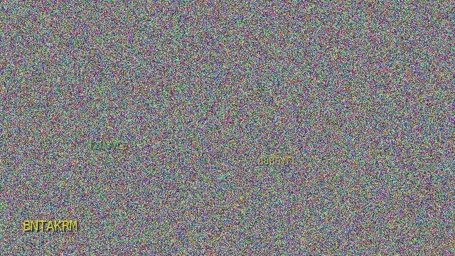
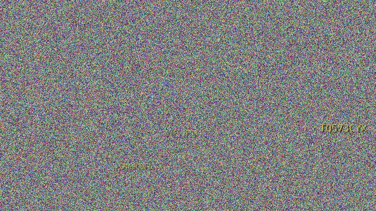

Goal: find a captcha generator configuration at which Gemini Flash achieves ~3% EM
(the sweet spot between "100% trivial" and "0% hallucination"). Fitness function:
-|EM - 0.03| - 0.5·(missing/n).
Two examples from Round 3: an "easy" program that Gemini solves perfectly, and the calibration target that produces near-miss errors. The images below are the input (what the VLM sees); the yellow box labels the gold key, and the dashed box shows what Gemini actually predicted.


Observation: raising noise σ from 2→4, blur from 0.1→0.25, and lowering alpha/font moves Gemini from
perfect reading to consistent single-character errors (Q→O, Q→0, X→K, 8→B, 6→G on R3 prog_3). The model still
outputs a 8-character uppercase string — it is attempting to read, not guessing.
| Round | Programs | Samples/prog | Model | Best EM | Best fitness | Notes |
|---|---|---|---|---|---|---|
| R1 | 5 | 4 | mixed (gemini/claude/codex) | 100% | -0.03 | Wide sweep; gemini reads, claude hallucinates, codex cannot see images |
| R2 | 5 | 4 | gemini | 0% / 100% | -0.03 | Bimodal: 2 progs @ 100%, 3 @ 0%. Narrowed to α=130–150 |
| R3 | 5 | 4 | gemini | 0% / 25% / 75% / 100% | -0.03 | Near-miss found: prog_3 EM=0% with correct length |
| R4 | 5 | 8 | claude (Gemini API down) | 0% | -0.03 | Claude hallucinates — char-acc 2–11%, data invalid |
Initial parameter exploration with a mix of VLMs to check the ceiling.
| prog | model | α | font % | dist | noise | blur | EM | fit |
|---|---|---|---|---|---|---|---|---|
| 0 | gemini | 220 | 10% | 0 | 0 | 0 | 100% | -0.97 |
| 1 | claude | 160 | 6% | 3 (1y) | 10 | 0 | 0% | -0.03 |
| 2 | codex | 180 | 6% | 0 | 0 | 0 | 0% | -0.53 (miss) |
| 3 | gemini | 140 | 5% | 2 (1y) | 0 | 0 | 50% | -0.47 |
| 4 | claude | 180 | 6% | 0 | 0 | 0 | 0% | -0.03 |
Finding: gemini reads at α≥140 and font≥5%; claude/codex are not informative. From R2 onward we use gemini only.
| prog | α | font % | dist | noise | blur | EM | fit |
|---|---|---|---|---|---|---|---|
| 0 | 130 | 4.5% | 3 (2y) | 5.0 | 0.3 | 0% | -0.03 |
| 1 | 180 | 6% | 4 (3y) | 0 | 0 | 100% | -0.97 |
| 2 | 120 | 4% | 5 (4y) | 8.0 | 0.5 | 0% | -0.03 |
| 3 | 180 | 6% | 0 | 0 | 0 | 100% | -0.97 |
| 4 | 100 | 3.5% | 6 (5y) | 12.0 | 0.8 | 0% | -0.03 |
Finding: sharp 0%/100% boundary. prog_0 (α=130, 3 distractors / 2 yellow, σ=5) is 0% with correct length — a candidate for further narrowing.
| prog | α | font % | key_len | dist | noise | blur | EM | fit | desc |
|---|---|---|---|---|---|---|---|---|---|
| 0 | 150 | 5.0% | 8 | 3 (2y) | 3.0 | 0.20 | 25% | -0.22 | bump of R2 prog_0 |
| 1 | 160 | 5.5% | 7 | 2 (1y) | 2.0 | 0.10 | 100% | -0.97 | weak distractors |
| 2 | 140 | 5.0% | 8 | 4 (4y) | 0 | 0 | 25% | -0.22 | max yellow distractors |
| 3 | 145 | 4.8% | 8 | 3 (2y) | 4.0 | 0.25 | 0% (near-miss) | -0.03 | best near-miss |
| 4 | 155 | 5.2% | 7 | 3 (3y) | 2.0 | 0.15 | 75% | -0.72 | all-yellow stress |
Finding: prog_3 delivers 0% EM with predictions of the correct length (8 characters) — the model is
reading but getting confused on single characters. Confusion pairs observed on R3 prog_3:
Q→O, Q→0, X→K, 8→B, 6→G. This is the ideal starting point for R4: loosen slightly.
project_swarm_eval.md memory, Claude hallucinates on captchas.
| prog | α | font % | dist | noise | blur | EM (claude) | char-acc |
|---|---|---|---|---|---|---|---|
| 0 | 148 | 4.90% | 3 (2y) | 3.5 | 0.22 | 0% | 9% |
| 1 | 147 | 4.85% | 3 (2y) | 3.8 | 0.23 | 0% | 3% |
| 2 | 146 | 4.90% | 4 (3y) | 3.0 | 0.20 | 0% | 2% |
| 3 | 149 | 4.95% | 3 (2y) | 3.0 | 0.20 | 0% | 8% |
| 4 | 145 | 4.90% | 4 (4y) | 2.0 | 0.15 | 0% | 11% |
Representative hallucinations:
gold=D79ARJ7P pred=V76J0002 (prog_1 / img_s021000) gold=MTUYC4KK pred=5H0K5140 (prog_1 / img_s021002) gold=EFTH2F5Q pred=UHK4FYT7 (prog_1 / img_s021003)
Not a single character lands in the correct position — the model fabricates keys instead of reading them. The R4 images are valid and are retained for re-evaluation when Gemini is back.
| Param | R1 best | R2 best near-miss | R3 best near-miss | R4 (not evaluated) |
|---|---|---|---|---|
| alpha | 220 → 140 | 130 | 145 | 145–149 |
| font % | 5–10% | 4.5% | 4.8% | 4.85–4.95% |
| distractors | 0–3 | 3 (2y) | 3 (2y) | 3–4 (2–4y) |
| noise σ | 0 | 5.0 | 4.0 | 2–4 |
| blur | 0 | 0.3 | 0.25 | 0.15–0.23 |
eval/gepa_rounds/cipher_gepa_r4/prog_{0-4}/, batches.json is ready — just run
the Swarm gemini agents and feed the existing score.py.eval/gepa_rounds/ cipher_gepa_r1/ # R1: 5 progs × 4 samples, mixed models cipher_gepa_r2/ # R2: 5 × 4, gemini only cipher_gepa_r3/ # R3: 5 × 4, best round (prog_3 — near-miss) cipher_gepa_r4/ # R4: 5 × 8, invalid (claude instead of gemini) report.html # this file
Each subdirectory contains batches.json (genomes + image paths), pred_prog{N}.json
(predictions), scores.json (metrics), score.py, and a prog_{0-4}/ folder
with the JPG captchas. R3/R4 also ship their generate.py.
Generated: 2026-04-14. Target EM: 3%. Best candidate: R3 prog_3 (α=145, font=4.8%, 3 distractors / 2 yellow, noise σ=4, blur=0.25).